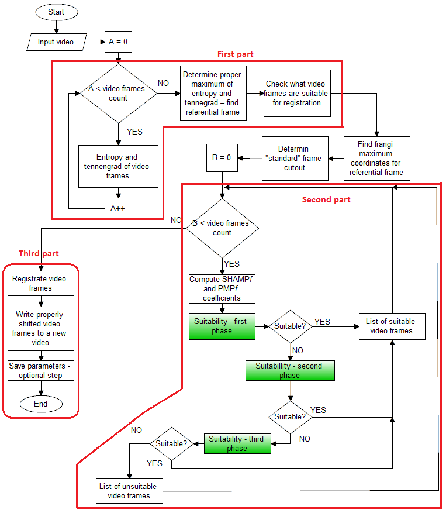

First two parts check, if there are video frames which should not be registrated in the video. Several methods were used to evaluate every problematic video frame to minimize the chance a good frame would be marked as not suitable for registration. When the second part is finished, the lists of good and bad video frames are created and they are used as the input for the third part.
